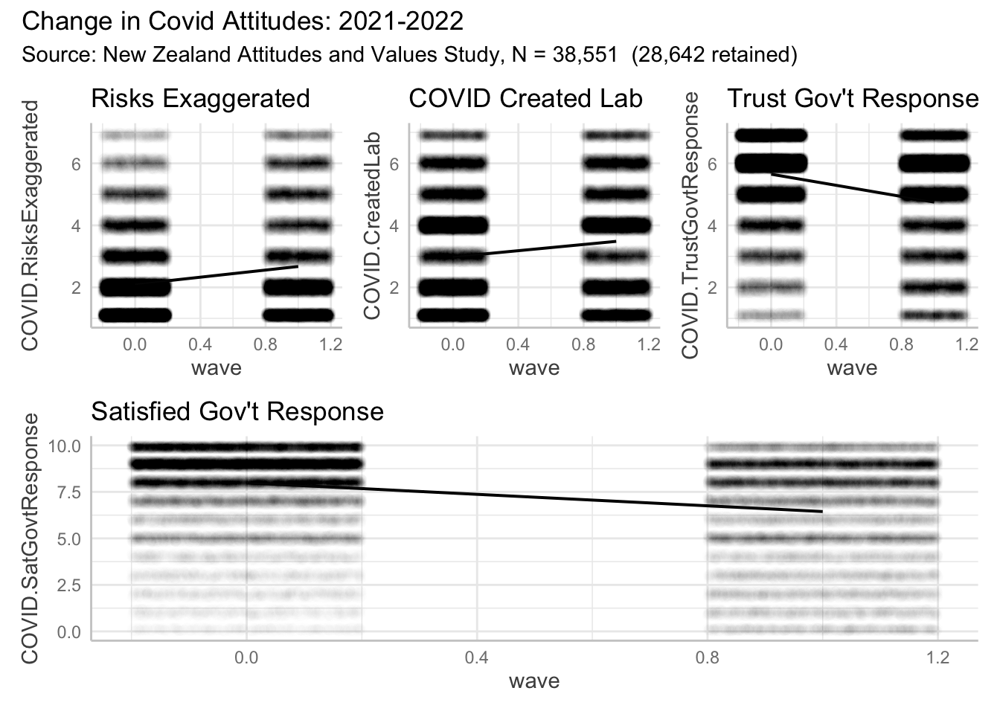

![]()
Purpose
We investigate change in attitudes to COVID-19 from the Time 12 and Time 13 of the New Zealand Attitudes and Values Study (NZAVS). The NZAVS is a national probability panel study of attitudes and values in New Zealanders, started by Chris G. Sibley in 2009. See: Link and NZAVS homepage
The sample consists of all those participants who responded in Time 12 (N = 38,551). The sample in Time 13 was (n = 28,642).
Covid Questions
The NZAVS recorded the following four attitudes to COVID-19 in both Time 12 and Time 13:
Covid risks are exaggerated
- “I think that health risks associated with COVID-19 have been wildly exaggerated.” (1-7)
Covid created in a lab
- “I think it is quite likely that COVID-19 was created in a laboratory.” (1-7)
COVID-19 Trust Government response
- “I trust the Government to make sensible decisions about how to best manage COVID-19 in New Zealand.” (1-7)
COVID-19 Satisfied with Government response
- “The New Zealand government response to COVID-19.” (0-10)
Boxplot indicates decline in both perceived risks of COVID & Satisfaction with Government Response
Show the code
# make graph
cov_values <- dt_long |>
dplyr::mutate(Target = forcats::fct_reorder(Attitudes, desc(Values))) |>
ggplot2::ggplot(aes(Target, Values, fill = Attitudes)) +
labs(title = "Covid Attitudes NZ 2020/21 to 2021/22 (N = 38,551)") +
geom_boxplot(size = .05, notch = T) + scale_fill_viridis_d() +
facet_grid (. ~ Wave, scales = "free_x", space = "free_x") +
# coord_flip() +
theme(legend.position = "none") +
theme_classic()
cov_values <- cov_values +
theme(axis.text.x=element_blank(),
axis.ticks.x=element_blank()
) +
theme(legend.position = "top")
# print graph
cov_values
# save graph
ggsave(
cov_values,
path = here::here(here::here("posts", "covid-change")),
width = 9,
height = 9,
units = "in",
filename = "covid-change.png",
device = 'png',
limitsize = FALSE,
dpi = 100
)
Model
We formally model this change using a multi-level model.
| Parameter | Risks Exaggerated | Created Lab | Trust Govt Response | Sat Govt Response |
|---|---|---|---|---|
| (Intercept) | 2.10 (2.08, 2.11) | 2.98 (2.96, 3.00) | 7.99 (7.96, 8.02) | 5.65 (5.63, 5.66) |
| Wave (2021) | 0.58 (0.56, 0.60) | 0.50 (0.49, 0.52) | -1.54 (-1.57, -1.52) | -0.90 (-0.91, -0.88) |
| Observations | 64372 | 65048 | 66816 | 65439 |
Model results

Summary of findings
Overall, New Zealanders do not perceive the risks of COVID-19 to be exaggerated, however there is somewhat greater perception of exaggeration this year compared to last year.
There is an increasing belief that COVID-19 was manufactured in a laboratory.
Overall, New Zealanders express high levels of trust in the New Zealand Government response to COVID-19, but levels have declined somewhat during the past year.
Similarly, New Zealanders are generally satisfied with the New Zealand Government response to COVID-19, but levels of trust have declined somewhat during the past year.
Importantly, these models do not adjust for bias from NZAVS sample attrition. The NZAVS is independent of government. However, to the extent that institutional mistrust of the government has extended to scientific institutions, lower trust and satisfaction with the government response to COVID-19 will have been somewhat greater than reported in the retained NZAVS sample.
In future work, we shall account for the bias from sample attrition using multiple imputation.
We will report our results here.
Appendix: Descriptive information
| Characteristic | Time12, N = 38,5511 | Time13, N = 28,6421 |
|---|---|---|
| COVID.RisksExaggerated | ||
| 1 | 19,380 / 37,437 (52%) | 11,281 / 26,935 (42%) |
| 2 | 8,610 / 37,437 (23%) | 5,595 / 26,935 (21%) |
| 3 | 3,062 / 37,437 (8.2%) | 2,422 / 26,935 (9.0%) |
| 4 | 2,406 / 37,437 (6.4%) | 2,001 / 26,935 (7.4%) |
| 5 | 1,806 / 37,437 (4.8%) | 2,072 / 26,935 (7.7%) |
| 6 | 1,159 / 37,437 (3.1%) | 1,850 / 26,935 (6.9%) |
| 7 | 1,014 / 37,437 (2.7%) | 1,714 / 26,935 (6.4%) |
| Unknown | 1,114 | 1,707 |
| COVID.CreatedLab | ||
| 1 | 13,136 / 37,284 (35%) | 7,463 / 27,764 (27%) |
| 2 | 6,280 / 37,284 (17%) | 4,371 / 27,764 (16%) |
| 3 | 2,510 / 37,284 (6.7%) | 2,043 / 27,764 (7.4%) |
| 4 | 6,922 / 37,284 (19%) | 5,456 / 27,764 (20%) |
| 5 | 2,975 / 37,284 (8.0%) | 2,725 / 27,764 (9.8%) |
| 6 | 2,865 / 37,284 (7.7%) | 2,898 / 27,764 (10%) |
| 7 | 2,596 / 37,284 (7.0%) | 2,808 / 27,764 (10%) |
| Unknown | 1,267 | 878 |
| COVID.TrustGovtResponse | ||
| 1 | 1,213 / 38,123 (3.2%) | 2,733 / 27,316 (10%) |
| 2 | 1,379 / 38,123 (3.6%) | 2,240 / 27,316 (8.2%) |
| 3 | 1,760 / 38,123 (4.6%) | 2,179 / 27,316 (8.0%) |
| 4 | 2,357 / 38,123 (6.2%) | 2,346 / 27,316 (8.6%) |
| 5 | 5,182 / 38,123 (14%) | 4,575 / 27,316 (17%) |
| 6 | 12,833 / 38,123 (34%) | 8,060 / 27,316 (30%) |
| 7 | 13,399 / 38,123 (35%) | 5,183 / 27,316 (19%) |
| Unknown | 428 | 1,326 |
| COVID.SatGovtResponse | 7.99 (2.35) | 6.49 (3.08) |
| Unknown | 252 | 125 |
| 1 n / N (%); Mean (SD) | ||
Descriptive table
Appendix B: Model equations (Descriptive)
Model 1
\[ \begin{aligned} \operatorname{COVID.RisksExaggerated}_{i} &\sim N \left(\alpha_{j[i]} + \beta_{1}(\operatorname{wave}), \sigma^2 \right) \\ \alpha_{j} &\sim N \left(\mu_{\alpha_{j}}, \sigma^2_{\alpha_{j}} \right) \text{, for Id j = 1,} \dots \text{,J} \end{aligned} \]
Model 2
\[ \begin{aligned} \operatorname{COVID.CreatedLab}_{i} &\sim N \left(\alpha_{j[i]} + \beta_{1}(\operatorname{wave}), \sigma^2 \right) \\ \alpha_{j} &\sim N \left(\mu_{\alpha_{j}}, \sigma^2_{\alpha_{j}} \right) \text{, for Id j = 1,} \dots \text{,J} \end{aligned} \]
Model 3
\[ \begin{aligned} \operatorname{COVID.TrustGovtResponse}_{i} &\sim N \left(\alpha_{j[i]} + \beta_{1}(\operatorname{wave}), \sigma^2 \right) \\ \alpha_{j} &\sim N \left(\mu_{\alpha_{j}}, \sigma^2_{\alpha_{j}} \right) \text{, for Id j = 1,} \dots \text{,J} \end{aligned} \]
Model 4
\[ \begin{aligned} \operatorname{COVID.SatGovtResponse}_{i} &\sim N \left(\alpha_{j[i]} + \beta_{1}(\operatorname{wave}), \sigma^2 \right) \\ \alpha_{j} &\sim N \left(\mu_{\alpha_{j}}, \sigma^2_{\alpha_{j}} \right) \text{, for Id j = 1,} \dots \text{,J} \end{aligned} \]
Appendix 3
We are grateful to the maintainers of the following packages, which we use in our work.
R version 4.2.0 (2022-04-22)
Platform: aarch64-apple-darwin20 (64-bit)
Running under: macOS Monterey 12.4
Matrix products: default
BLAS: /Library/Frameworks/R.framework/Versions/4.2-arm64/Resources/lib/libRblas.0.dylib
LAPACK: /Library/Frameworks/R.framework/Versions/4.2-arm64/Resources/lib/libRlapack.dylib
locale:
[1] en_US.UTF-8/en_US.UTF-8/en_US.UTF-8/C/en_US.UTF-8/en_US.UTF-8
attached base packages:
[1] splines stats graphics grDevices datasets utils methods
[8] base
other attached packages:
[1] gtsummary_1.6.2.9004 equatiomatic_0.3.1 CMAverse_0.1.0
[4] gt_0.7.0 ggeffects_1.1.4 katex_1.4.0
[7] patchwork_1.1.2 lubridate_1.8.0 parameters_0.19.0
[10] kableExtra_1.3.4 table1_1.4.2 ggokabeito_0.1.0
[13] brms_2.18.0 geepack_1.3.9 cmdstanr_0.5.3
[16] rstan_2.21.7 StanHeaders_2.21.0-7 lme4_1.1-31
[19] Matrix_1.5-1 ggpubr_0.4.0 formula.tools_1.7.1
[22] gghighlight_0.4.0 marginaleffects_0.7.1 skimr_2.1.4
[25] naniar_0.6.1 conflicted_1.1.0 Amelia_1.8.0
[28] Rcpp_1.0.9 miceadds_3.15-21 mice_3.14.0
[31] stdReg_3.4.1 here_1.0.1 janitor_2.1.0
[34] devtools_2.4.5 usethis_2.1.6 remotes_2.4.2
[37] forcats_0.5.2 stringr_1.4.1 dplyr_1.0.10
[40] purrr_0.3.5 readr_2.1.3 tidyr_1.2.1
[43] tibble_3.1.8 ggplot2_3.4.0 tidyverse_1.3.2
loaded via a namespace (and not attached):
[1] estimability_1.4.1 metadat_1.2-0 msm_1.6.9
[4] coda_0.19-4 ragg_1.2.4 visdat_0.5.3
[7] knitr_1.40 dygraphs_1.1.1.6 multcomp_1.4-20
[10] data.table_1.14.4 inline_0.3.19 generics_0.1.3
[13] callr_3.7.2 TH.data_1.1-1 future_1.29.0
[16] EValue_4.1.3 tzdb_0.3.0 webshot_0.5.4
[19] xml2_1.3.3 httpuv_1.6.6 assertthat_0.2.1
[22] gargle_1.2.1 xfun_0.34 hms_1.1.2
[25] bayesplot_1.9.0 evaluate_0.18 promises_1.2.0.1
[28] fansi_1.0.3 dbplyr_2.2.1 readxl_1.4.1
[31] igraph_1.3.5 DBI_1.1.3 htmlwidgets_1.5.4
[34] tensorA_0.36.2 googledrive_2.0.0 stats4_4.2.0
[37] ellipsis_0.3.2 crosstalk_1.2.0 backports_1.4.1
[40] V8_4.2.1 survey_4.1-1 insight_0.18.6
[43] markdown_1.3 RcppParallel_5.1.5 vctrs_0.5.0
[46] sjlabelled_1.2.0 abind_1.4-5 cachem_1.0.6
[49] withr_2.5.0 drgee_1.1.10 checkmate_2.1.0
[52] emmeans_1.8.2 xts_0.12.2 prettyunits_1.1.1
[55] svglite_2.1.0 crayon_1.5.2 labeling_0.4.2
[58] SuppDists_1.1-9.7 pkgconfig_2.0.3 nlme_3.1-158
[61] pkgload_1.3.1 nnet_7.3-18 globals_0.16.1
[64] rlang_1.0.6 lifecycle_1.0.3 miniUI_0.1.1.1
[67] nleqslv_3.3.3 colourpicker_1.2.0 sandwich_3.0-2
[70] mathjaxr_1.6-0 modelr_0.1.9 cellranger_1.1.0
[73] distributional_0.3.1 rprojroot_2.0.3 matrixStats_0.62.0
[76] datawizard_0.6.3 loo_2.5.1 carData_3.0-5
[79] boot_1.3-28 zoo_1.8-11 reprex_2.0.2
[82] base64enc_0.1-3 gamm4_0.2-6 ggridges_0.5.4
[85] processx_3.8.0 googlesheets4_1.0.1 viridisLite_0.4.1
[88] parallelly_1.32.1 shinystan_2.6.0 rstatix_0.7.0
[91] ggsignif_0.6.4 scales_1.2.1 memoise_2.0.1
[94] magrittr_2.0.3 plyr_1.8.7 threejs_0.3.3
[97] compiler_4.2.0 rstantools_2.2.0 snakecase_0.11.0
[100] cli_3.4.1 urlchecker_1.0.1 listenv_0.8.0
[103] ps_1.7.2 Brobdingnag_1.2-9 Formula_1.2-4
[106] MASS_7.3-58.1 mgcv_1.8-40 tidyselect_1.2.0
[109] stringi_1.7.8 textshaping_0.3.6 projpred_2.2.1
[112] mitools_2.4 yaml_2.3.6 bridgesampling_1.1-2
[115] grid_4.2.0 ggdag_0.2.7 tools_4.2.0
[118] parallel_4.2.0 rstudioapi_0.14 foreign_0.8-83
[121] medflex_0.6-7 gridExtra_2.3 posterior_1.3.1
[124] farver_2.1.1 digest_0.6.30 simex_1.8
[127] shiny_1.7.3 operator.tools_1.6.3 car_3.1-1
[130] broom_1.0.1 metafor_3.8-1 later_1.3.0
[133] httr_1.4.4 MetaUtility_2.1.2 colorspace_2.0-3
[136] rvest_1.0.3 fs_1.5.2 expm_0.999-6
[139] renv_0.16.0 shinythemes_1.2.0 sessioninfo_1.2.2
[142] systemfonts_1.0.4 xtable_1.8-4 jsonlite_1.8.3
[145] nloptr_2.0.3 tidygraph_1.2.2 R6_2.5.1
[148] broom.mixed_0.2.9.4 profvis_0.3.7 pillar_1.8.1
[151] htmltools_0.5.3 mime_0.12 glue_1.6.2
[154] fastmap_1.1.0 minqa_1.2.5 DT_0.26
[157] codetools_0.2-18 furrr_0.3.1 pkgbuild_1.3.1
[160] mvtnorm_1.1-3 utf8_1.2.2 lattice_0.20-45
[163] numDeriv_2016.8-1.1 curl_4.3.3 gtools_3.9.3
[166] shinyjs_2.1.0 survival_3.4-0 rmarkdown_2.17
[169] repr_1.1.4 munsell_0.5.0 broom.helpers_1.9.0
[172] haven_2.5.1 reshape2_1.4.4 gtable_0.3.1
[175] bayestestR_0.13.0 Reuse
Citation
@online{bulbulia2022,
author = {Joseph Bulbulia and Chris G Sibley},
title = {Changes in {Perceived} {Risks} and {Government} {Attitudes}
to {COVID-19} in {New} {Zealand:} Years 2021 - 2022},
date = {2022-11-11},
url = {https://go-bayes.github.io/b-causal/},
langid = {en}
}